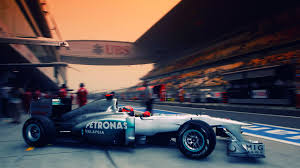
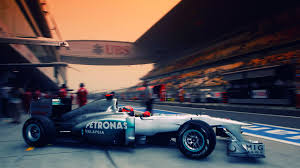

F1 identifies a unique genre of motor racing which has a long and distinguished history. Formula referred to the unique set of regulations governing the cars, while the 1 denoted the championship’s status as the highest level of international motorsport recognised by the governing body, the FIA (Federation Internationale de l Automobile). But Formula 1 and F1 quickly came to signify far more.
Its roots lie in pre-war Grand Prix racing, but it was in 1950 that the major races were brought together in the inaugural Formula One world championship. Featuring seven rounds - around 20 is today’s norm - the first championship encompassed events in Britain, Monaco, Switzerland, Belgium, France, Italy and the United States. It was global from the beginning. Over the next three decades Formula One racing grew from a gentlemen racers pastime into something far more professional such that by the 1970s it was rapidly evolving into the sporting spectacle we know today, with the F1 brand representing glamour, speed and technical excellence on a worldwide stage.
Innovation, glamour, excitement, speed and excellence - the F1 brand is a powerful symbol and has long denoted and identified a fine and distinctive partnership between sporting and technological excellence, embracing its historical roots whilst looking forward to the challenges of the future to maintain its position as the very pinnacle of motor racing.
 
